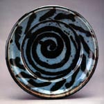
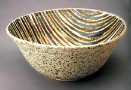
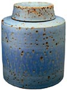

| Richard Fairbanks
(1929-1989)
American studio potter

American
studio potter and teacher Richard Fairbanks (1929-1989) studied
at the University of Washington under Paul
Bonifas, earning a BA in 1953 and at Mills College under
Antonio Preito, earning an MA in 1955. A Fulbright Scholarship enabled
him to study at the Institute of Industrial Arts in Helsinki, Finland
in 1959-60. He taught at Mills College from 1954-55, Drake University
from 1956-59 and 1960-63 and at Central Washington University from
1963-89.
Fairbanks was a member of the American
Craft Council and an associate member of the British Craftsmen
Potters Association (now Craft
Potters Association).

Inspired by his experiences in Finland and his research in Eastern
Europe in 1986, Fairbanks made wheel-thrown, vessel-based work from
a coarse stoneware clay.
In
1993 Matthew Kangas wrote the biography Richard
Fairbanks, American Potter. In 1999 his wife Dixie Parker-Fairbanks
posthumously published his letter exchange with Finnish potter Kyllikki
Salmenhaara as Essential
Passions: Fairbanks-Salmenhaara Letters, 1959-1987 and
in 2000 the account of their research into Eastern European folk
art Silent
Sunflowers: A Balkan Memoir.
Many
thanks to Dixie
Parker-Fairbanks for background information and images.
Images © Dixie Parker-Fairbanks.
More Artists of the Week
More Articles
|
{kind=link}
{kind=link}
{kind=link}